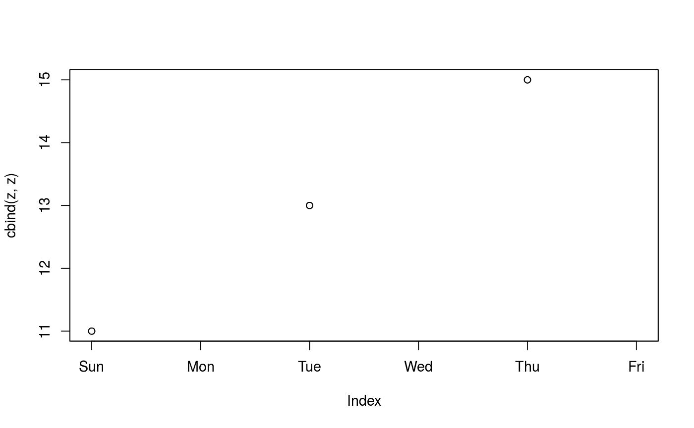
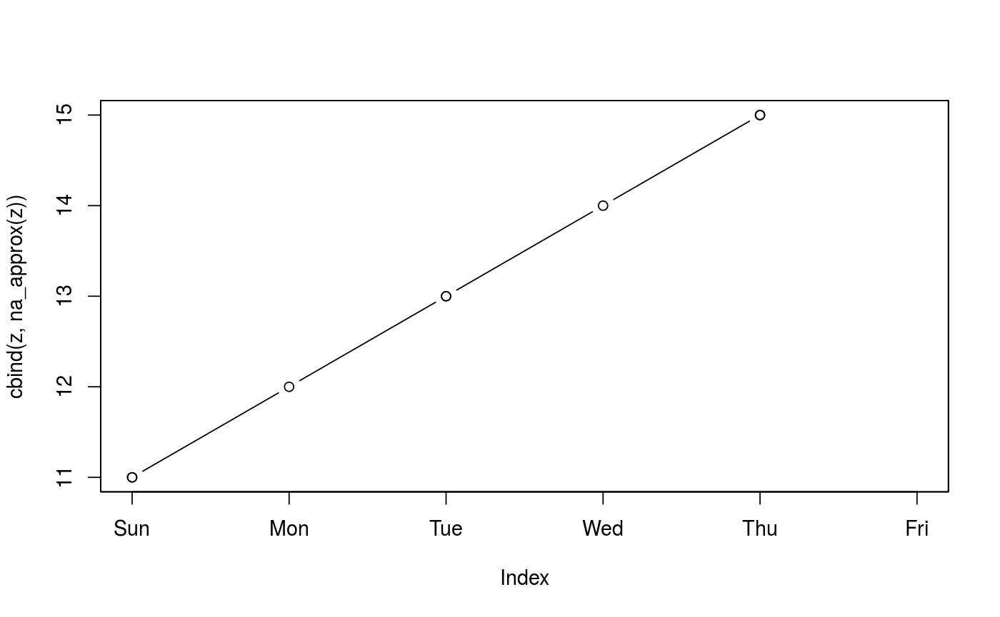

Generic functions for replacing each NA with interpolated values.
na_approx(object, ...)
| object | object in which |
|---|---|
| … | further arguments passed to methods. The |
| x, xout | Variables to be used for interpolation as in
|
| na_rm | logical. If the result of the (spline) interpolation still
results in |
| maxgap | maximum number of consecutive |
| along | deprecated. |
An object of similar structure as object with (internal)
NAs replaced by interpolation. Leading or trailing NAs are
omitted if na_rm = TRUE or not replaced if na_rm = FALSE.
Missing values (NAs) are replaced by linear interpolation via
approx or cubic spline interpolation via spline,
respectively.
It can also be used for series disaggregation by specifying xout.
By default the index associated with object is used for
interpolation. Note, that if this calls index.default this gives an
equidistant spacing 1:NROW(object). If object is a matrix or
data.frame, the interpolation is done separately for each column.
If obj is a plain vector then na_approx(obj, x, y, xout, ...)
returns approx(x = x[!na], y = coredata(obj)[!na], xout = xout, ...)
(where na indicates observations with NA) such that
xout defaults to x.
If obj is a zoo, zooreg or ts object its
coredata value is processed as described and its time index is
xout if specified and index(obj) otherwise. If obj is
two dimensional then the above is applied to each column separately. For
examples, see below.
If obj has more than one column, the above strategy is applied to
each column.
zoo, approx,
na_contiguous, na_locf, na_omit,
na_trim, spline,
stinterp
z <- zoo(c(2, NA, 1, 4, 5, 2), c(1, 3, 4, 6, 7, 8)) ## use underlying time scale for interpolation na_approx(z)#> 1 3 4 6 7 8 #> 2.000000 1.333333 1.000000 4.000000 5.000000 2.000000## use equidistant spacing na_approx(z, 1:6)#> 1 3 4 6 7 8 #> 2.0 1.5 1.0 4.0 5.0 2.0# with and without na_rm = FALSE zz <- c(NA, 9, 3, NA, 3, 2) na_approx(zz, na_rm = FALSE)#> [1] NA 9 3 3 3 2na_approx(zz)#> [1] 9 3 3 3 2d0 <- as.Date("2000-01-01") z <- zoo(c(11, NA, 13, NA, 15, NA), d0 + 1:6) # NA fill, drop or keep leading/trailing NAs na_approx(z)#> 2000-01-02 2000-01-03 2000-01-04 2000-01-05 2000-01-06 #> 11 12 13 14 15na_approx(z, na_rm = FALSE)#> 2000-01-02 2000-01-03 2000-01-04 2000-01-05 2000-01-06 2000-01-07 #> 11 12 13 14 15 NA# extrapolate to point outside of range of time points # (a) drop NA, (b) keep NA, (c) extrapolate using rule = 2 from approx() na_approx(z, xout = d0 + 7)#> Data: #> numeric(0) #> #> Index: #> [1] "Date of length 0"na_approx(z, xout = d0 + 7, na_rm = FALSE)#> 2000-01-08 #> NAna_approx(z, xout = d0 + 7, rule = 2)#> 2000-01-08 #> 15# use splines - extrapolation handled differently z <- zoo(c(11, NA, 13, NA, 15, NA), d0 + 1:6) na_spline(z)#> 2000-01-02 2000-01-03 2000-01-04 2000-01-05 2000-01-06 2000-01-07 #> 11 12 13 14 15 16na_spline(z, na_rm = FALSE)#> 2000-01-02 2000-01-03 2000-01-04 2000-01-05 2000-01-06 2000-01-07 #> 11 12 13 14 15 16na_spline(z, xout = d0 + 1:6)#> 2000-01-02 2000-01-03 2000-01-04 2000-01-05 2000-01-06 2000-01-07 #> 11 12 13 14 15 16na_spline(z, xout = d0 + 2:5)#> 2000-01-03 2000-01-04 2000-01-05 2000-01-06 #> 12 13 14 15na_spline(z, xout = d0 + 7)#> 2000-01-08 #> 17na_spline(z, xout = d0 + 7, na_rm = FALSE)#> 2000-01-08 #> 17## using na_approx for disaggregation zy <- zoo(1:3, 2000:2001) # yearly to monthly series zmo <- na_approx(zy, xout = as.yearmon(2000+0:13/12)) zmo#> Jan 2000 Feb 2000 Mar 2000 Apr 2000 May 2000 Jun 2000 Jul 2000 Aug 2000 #> 1.000000 1.083333 1.166667 1.250000 1.333333 1.416667 1.500000 1.583333 #> Sep 2000 Oct 2000 Nov 2000 Dec 2000 Jan 2001 #> 1.666667 1.750000 1.833333 1.916667 2.000000# monthly to daily series sq <- seq(as.Date(start(zmo)), as.Date(end(zmo), frac = 1), by = "day") zd <- na_approx(zmo, x = as.Date, xout = sq) head(zd)#> 2000-01-01 2000-01-02 2000-01-03 2000-01-04 2000-01-05 2000-01-06 #> 1.000000 1.002688 1.005376 1.008065 1.010753 1.013441# weekly to daily series zww <- zoo(1:3, as.Date("2001-01-01") + seq(0, length = 3, by = 7)) zww#> 2001-01-01 2001-01-08 2001-01-15 #> 1 2 3zdd <- na_approx(zww, xout = seq(start(zww), end(zww), by = "day")) zdd#> 2001-01-01 2001-01-02 2001-01-03 2001-01-04 2001-01-05 2001-01-06 2001-01-07 #> 1.000000 1.142857 1.285714 1.428571 1.571429 1.714286 1.857143 #> 2001-01-08 2001-01-09 2001-01-10 2001-01-11 2001-01-12 2001-01-13 2001-01-14 #> 2.000000 2.142857 2.285714 2.428571 2.571429 2.714286 2.857143 #> 2001-01-15 #> 3.000000# The lines do not show up because of the NAs plot(cbind(z, z), type = "b", screen = 1)# use na_approx to force lines to appear plot(cbind(z, na_approx(z)), type = "b", screen = 1)# Workaround where less than 2 NAs can appear in a column za <- zoo(cbind(1:5, NA, c(1:3, NA, 5), NA)); za#> #> 1 1 NA 1 NA #> 2 2 NA 2 NA #> 3 3 NA 3 NA #> 4 4 NA NA NA #> 5 5 NA 5 NAix <- colSums(!is.na(za)) > 0 za[, ix] <- na_approx(za[, ix]); za#> #> 1 1 NA 1 NA #> 2 2 NA 2 NA #> 3 3 NA 3 NA #> 4 4 NA 4 NA #> 5 5 NA 5 NA# using na_approx to create regularly spaced series # z has points at 10, 20 and 40 minutes while output also has a point at 30 if(require("chron")) { tt <- as.chron("2000-01-01 10:00:00") + c(1, 2, 4) * as.numeric(times("00:10:00")) z <- zoo(1:3, tt) tseq <- seq(start(z), end(z), by = times("00:10:00")) na_approx(z, xout = tseq) }#>#> (01/01/00 10:10:00) (01/01/00 10:20:00) (01/01/00 10:30:00) #> 1.0 2.0 2.5